💙 Nuestra Misión
Brindar cuidado con la más alta calidad técnica, científica y humana a nuestros residentes, ofreciendo una atención que refleje el trato que daríamos a nuestros propios familiares: con amor, paciencia y respeto.
Hogar geriátrico en la Sabana de Bogotá
Aquí trabajamos día a día para brindarles a nuestros residentes una vida plena, segura y feliz, en un ambiente cálido, seguro y lleno de atenciones personalizadas.
La Fundación Mis Abuelitos Cajicá · CO es una organización dedicada a brindar cuidados integrales y un hogar seguro a personas mayores, fomentando su bienestar físico, emocional y social. Somos un espacio dedicado al cuidado, el bienestar y el respeto de nuestros residentes.
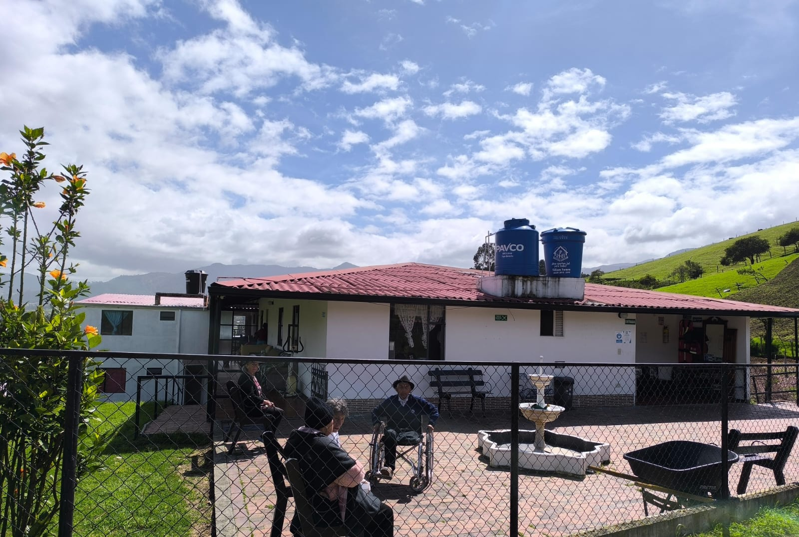
Brindar cuidado con la más alta calidad técnica, científica y humana a nuestros residentes, ofreciendo una atención que refleje el trato que daríamos a nuestros propios familiares: con amor, paciencia y respeto.
Ser un hogar especializado en brindar a nuestros residentes un cuidado integral, con servicios de alta calidad, calidez humana y profesionalismo, asegurando su satisfacción y sentido de pertenencia.
Programas pensados para el bienestar y desarrollo integral de cada uno de nuestros residentes.
Alojamiento habitacional cómodo y una nutrición balanceada, adaptada a las necesidades de cada residente.
Talleres, ejercicios y eventos sociales que fortalecen la autoestima y la alegría diaria.
Asistencia en higiene, vestimenta y movilidad, con personal atento y disponible 24/7.
Actividades religiosas y de reflexión que nutren el bienestar emocional y espiritual.
Tu apoyo se convierte en alimentación, cuidado, medicinas y compañía para nuestros abuelitos. ¡Cada aporte cuenta!
Con un aporte mensual puedes convertirte en padrino o madrina de uno de nuestros residentes, ayudando a cubrir su cuidado, alimentación y bienestar. Recibirás noticias de cómo tu apoyo transforma su día a día.
💬 Quiero ApadrinarPuedes donar de forma fácil y segura por cualquiera de estos medios:
A nombre de Andrés Herrera
💬 Avisar mi donaciónMomentos de alegría, compañía y cuidado en nuestro hogar.
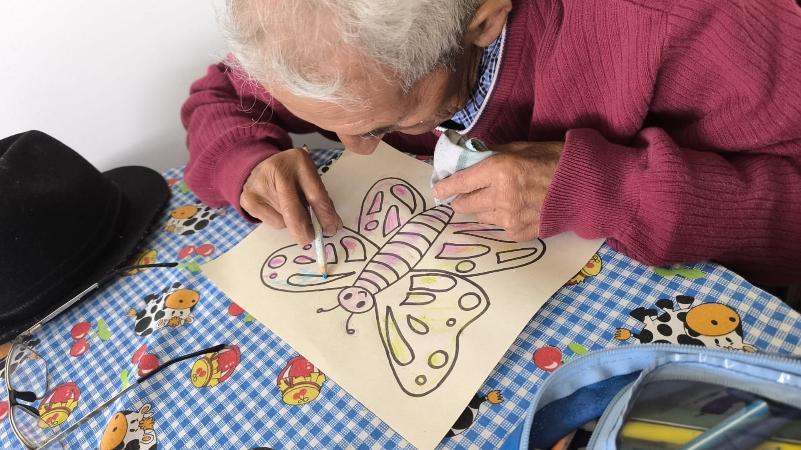
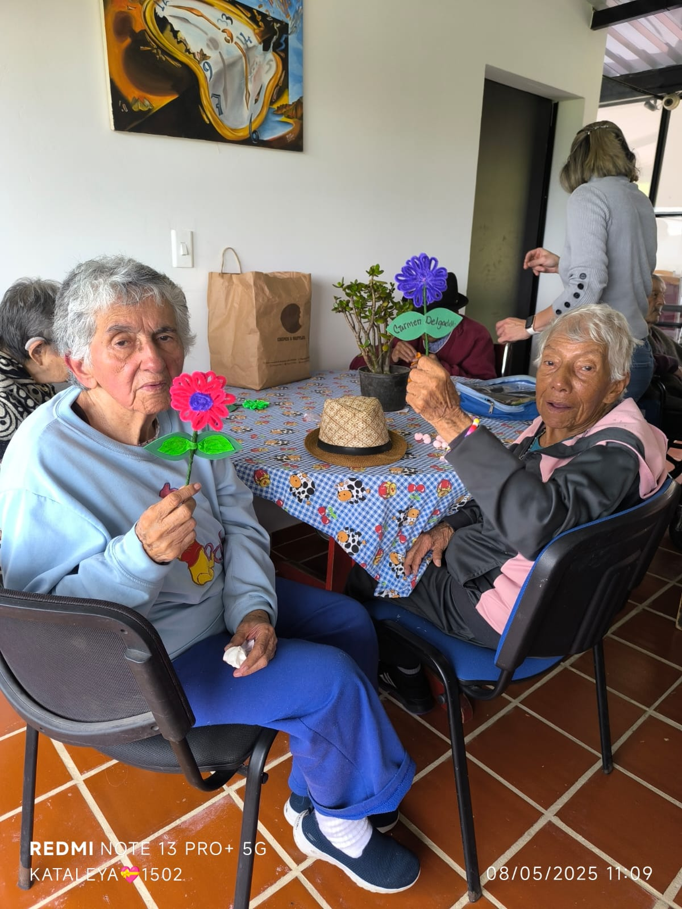
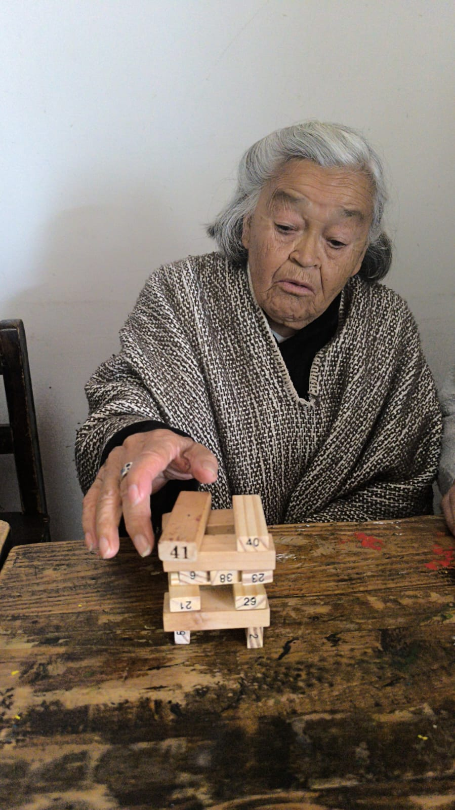
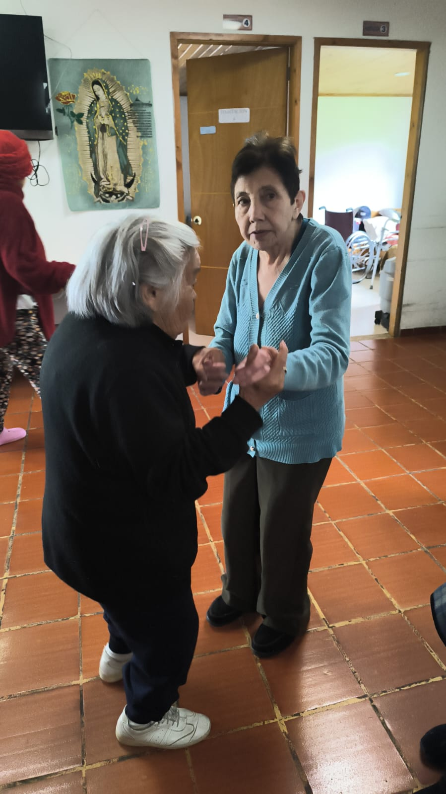
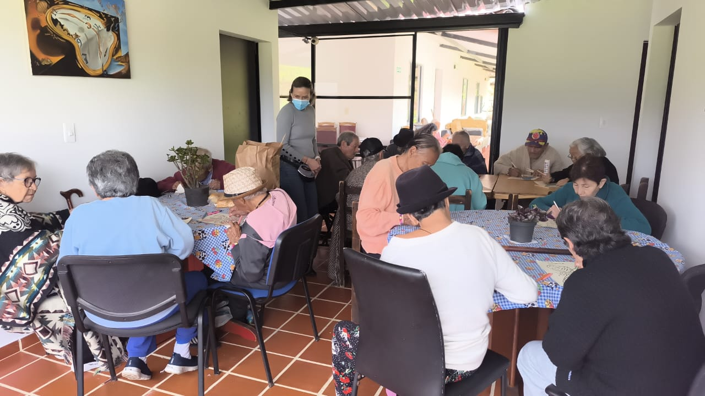
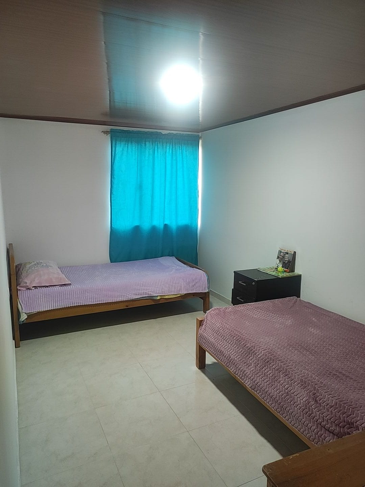
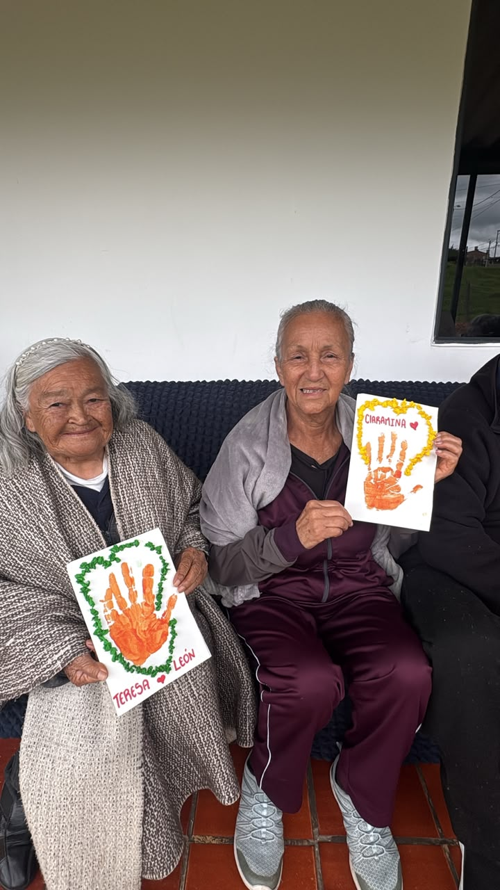
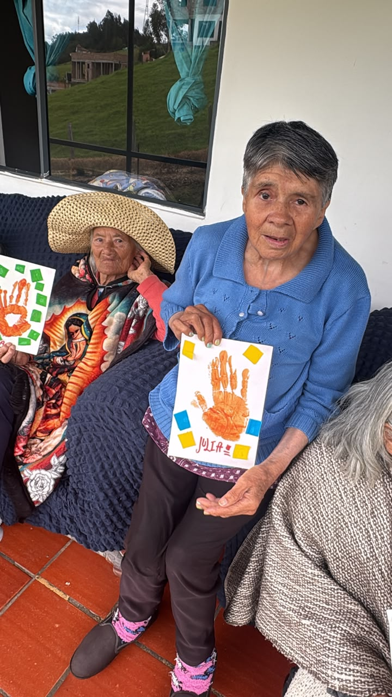
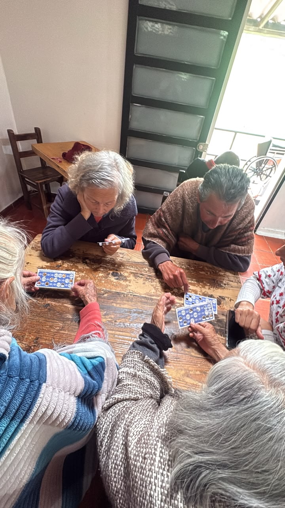
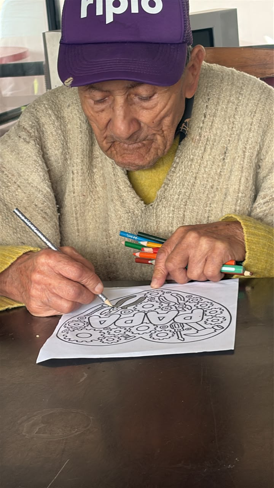
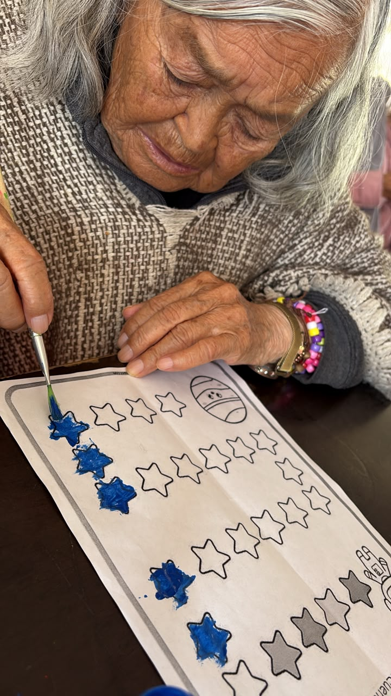
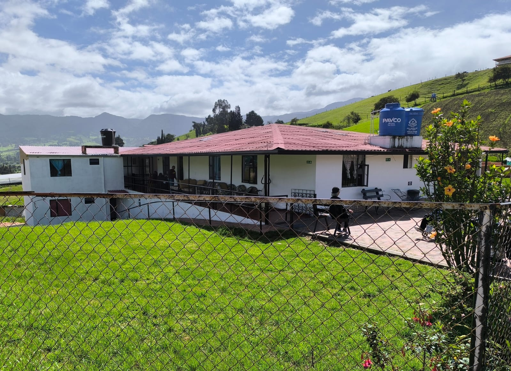
Estamos felices de atenderte y resolver todas tus preguntas. ¡Gracias por confiar en la Fundación!
321 408 1782
Escríbenos, respondemos pronto
fundacionmisabuelitoscajica.co@gmail.com
Finca Villa Judith, sector Los Castiblanco, Vereda Rincón Santo, Cogua (Cundinamarca)